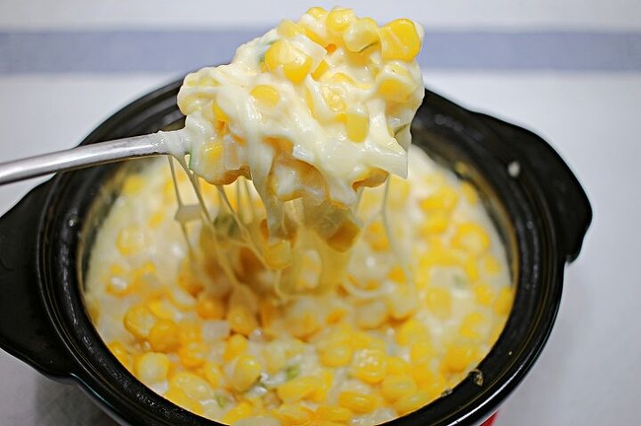

두부김치 는 나이먹은 꼰대들의 전형적인 안주로 소주와 굉장히 잘 어울리며 존나 맛있따.
두부김치
는 나이먹은 꼰대들의 전형적인 안주로 소주와 굉장히 잘 어울리며 존나 맛있따.

삼겹살
은 우리나라의 대표적인 육류로맥주 매화수 등 대다수의 술과 궁합이 좋다.
오뎅탕
은 뜨끈뜨끈하고 맑은 국물이 특징으로 쌀쌀한 날씨에 소주와 함께 조지면 그대로 극락의 맛을 느낄 수 있다.

족발
은 역시 육류안주의 대표적인 메뉴이다. 가격이 비싸지만 그 맛이 상당하다. 기름기가 많아 깔끔한 술과 조화가 좋다.
치킨
은 역시 대한민국 국민이라면 싫어할 수 없는 대표적인 메뉴이다. 맥주와 궁합이 좋다지만 개인적으로는 소주와 잘 어울린다.

콘치즈
는 회의 기본 안주이거나 대학MT에서 빠질 수 없는 메뉴이다. 간단하게 만들 수 있으며 맥주와 궁합이 좋다.
회
는 개인적으로 가장 선호하는 안주이다. 가격이 비싸지만 소주와 함께 조지면 인사불성 소주 4병 쌉가능.